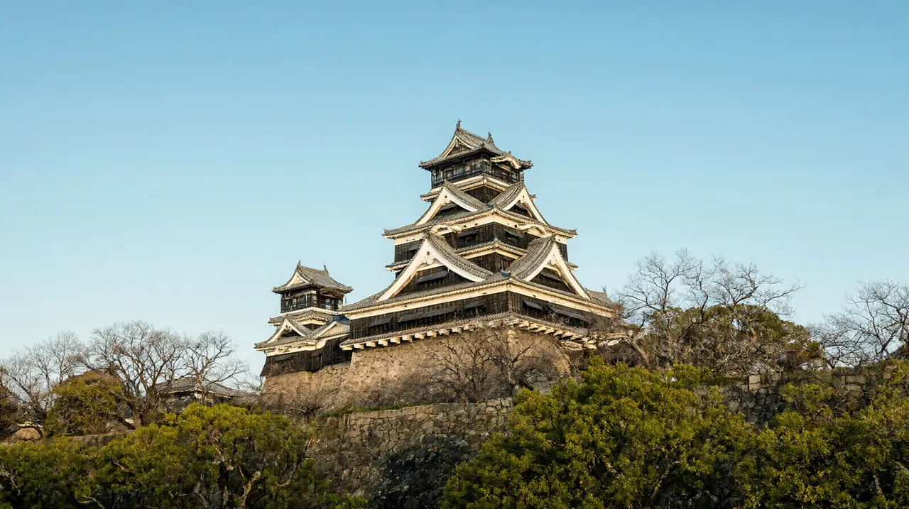

구마모토 여행 가이드
구마모토성과 아소, 구로카와를 렌터카로 잇는 가족 여행. 지진 후 현황 포함

이 글은 성인 2명과 초등학생 1명이 구마모토를 처음 가는 상황을 기준으로 썼습니다. 기준일은 2026-10-22입니다. 엔화 환산은 100엔 853.02원(한국수출입은행 매매기준율, 2026-10-16 고시)의 약 값이며, 카드로 결제하면 수수료가 더 붙습니다. 같은 권역의 후쿠오카와 비교할 때는 규슈 권역 페이지와 같은 값을 보세요.
한 줄 요약: 성을 천천히 보고, 하루는 렌터카로 아소 초원, 다른 하루는 구로카와 온천 마을로 나가는 규슈 중부 가족 여행입니다. 인천에서 직항으로 약 1시간 30분 걸립니다.
마지막 확인일: 2026-10-22
일정 보기 | 예산 보기
지진 후 현황 (2026-10-19 기준 안내 확인)
- 2026년 7월 28일 오후 구마모토현에 강한 지진이 있었고 진원은 구마모토시 남쪽이었습니다. 피해 정도는 지역마다 달랐습니다 (재팬가이드).
- 구마모토시는 큰 피해를 피해 거의 평소대로 돌아갑니다. 구마모토성과 스이젠지 정원을 포함한 대부분의 관광지가 다시 열렸습니다 (재팬가이드).
- 규슈 신칸센은 9월 18일 전 구간이 다시 달리고, 지진 영향을 받은 지역 철도도 10월 13일까지 모두 재개됐습니다 (재팬가이드).
- 아소와 구로카와 온천도 큰 피해가 없고 대부분의 시설과 숙소가 정상 운영 중입니다 (재팬가이드). 다만 방문객이 줄었다는 보도가 있으니 숙소와 식당 영업은 직접 확인하는 편이 안전합니다 (마이니치).
한눈에 보기
| 항목 | 내용 |
|---|---|
| 추천 일수 | 3박 4일. 2박 3일이라면 성과 아소, 또는 성과 구로카와 중 하나만 고르길 권합니다 |
| 비행시간 | 인천 출발 약 1시간 30분, 귀국편 약 1시간 35~45분 (항공사 시간표, 인천공항 운항 정보) |
| 아이 적합도 | 보통 (3단계 중 2단계). 볼거리는 좋지만 아소와 구로카와는 차로 오래 이동해서 어린 아이에게는 힘들 수 있습니다 |
이 도시가 맞는 사람
| 구분 | 내용 |
|---|---|
| 맞음 | 성과 정원을 느긋하게 보고 싶은 가족 |
| 맞음 | 렌터카로 아소 초원과 온천 마을을 하루씩 다녀올 수 있는 가족 |
| 맞음 | 인천 직항이 하루 2왕복 있어 짧은 일정으로 가고 싶은 가족 |
| 맞음 | 부산에서 출발해 직항을 타고 싶은 가족 (이스타항공 부산 노선 매일 운항, 구마모토공항 공식 운항표 10월 기준) |
| 덜 맞음 | 렌터카 없이 아소와 구로카와를 모두 보려는 경우. 버스는 운행 시간과 편수를 미리 확인해야 합니다 (확인 필요) |
| 덜 맞음 | 아소 화산 분화구 구경이 목적인 경우. 지금은 분화구에 접근할 수 없습니다 (E, ‘근교 당일치기’ 항목 참고) |
| 덜 맞음 | 쇼핑과 밤 놀거리가 여행의 중심인 경우 |
공항에서 시내까지
직항 노선 (2026-10-22 확인)
10월 25~31일 시각은 표에 함께 적었습니다. 11월 이후 동계 편성은 공항 운항표에 아직 올라오지 않아 확인 필요입니다.
| 항공사 | 편명 | 인천 출발 → 구마모토 도착 | 구마모토 출발 → 인천 도착 | 운항 요일 |
|---|---|---|---|---|
| 트리니티항공 | TW287 / TW288 | 07:55 → 09:25 (10월 25일부터 출발 07:50) | 10:25 → 12:00 (10월 25일부터 도착 12:05) | 매일 (구마모토공항 공식 운항표) |
| 대한항공 | KE2155 / KE2156 | 17:05 → 18:35 (10월 25일부터 16:45 → 18:20) | 19:35 → 21:20 (10월 25일부터 19:30 → 21:15) | 매일 (구마모토공항 공식 운항표) |
- 지진 다음 날인 7월 29일 보도에서 대한항공, 이스타항공, 티웨이항공의 구마모토 노선이 정상 운항으로 전해졌습니다 (한국경제TV 연합뉴스). 트리니티항공의 TW 편명이 그 티웨이항공 노선과 같은 것인지는 항공사 사이트에서 확인하세요. 출발 전에 일정 변경이 없는지도 다시 보세요.
- 구마모토공항 국제선 운항표에는 인천 2왕복과 부산 1왕복(이스타항공 ZE967/968)이 올라 있습니다 (구마모토공항 공식 사이트, 10월 22일 조회).
공항(아소 구마모토공항)에서 시내까지
| 노선 | 소요시간 | 요금(편도, 어른) | 막차와 메모 | 이런 가족에게 |
|---|---|---|---|---|
| 공항리무진 버스 → 구마모토역 앞 | 약 65분 | 1,400엔 (약 11,900원) | 평일 공항 출발 첫차 8:20, 막차 21:30 (2026년 4월 개정판). 11월 1일 개정판은 첫차 8:40, 막차 21:35이며 평일, 토요일, 일요일이 같습니다 (산코버스 공식 시간표 PDF) | 기차로 이동하는 가족 |
| 특급 리무진 → 도리초스지 | 약 40분 | 1,400엔 (약 11,900원) | 3번 승강장 출발 | 성 주변에 묵는 가족 |
| 특급 리무진 → 사쿠라마치 버스터미널 | 약 45분 | 1,400엔 (약 11,900원) | 3번 승강장 출발 | 시내 중심에 묵는 가족 |
| 리무진 → 스이젠지공원 앞 | 약 35분 | 1,000엔 (약 8,500원) | 4번 승강장 | 동쪽에 묵는 가족 |
| JR 호히선 구마모토→히고오즈 + 공항 연결 셔틀 | 열차 약 40분 + 셔틀 약 15분 | 열차 560엔 (약 4,800원) + 셔틀 200엔 (약 1,700원) | 셔틀(공항 라이너)은 2026년 7월 1일부터 일률 200엔 유료입니다 (공항, 라이너 공식 공지). 정정: 무료로 적은 재팬가이드 안내는 이전 정보였습니다 | 열차를 좋아하는 가족 |
| 아소역 방면 버스 | 약 1시간 | 1,500엔 (약 12,800원) | 4번 승강장, 야마비코호 | 바로 아소로 가는 경우 |
| 구로카와 온천 방면 버스 | 약 2시간 | 2,600엔 (약 22,200원) | 3번 승강장, 규슈 횡단 버스 | 렌터카 없이 바로 구로카와로 가는 경우 |
| 렌터카 | 공항 영업소에서 대여 | 확인 필요 | 영업소가 공항에 여러 곳 있습니다 (재팬가이드) | 아소와 구로카와를 함께 도는 가족 |
출처: 구마모토공항 공식 사이트 교통 안내, 산코버스 시간표와 운임 2026-08-01 개정판, 재팬가이드.
- 산코버스 시간표는 2026년 11월 1일에 다시 개정됩니다 (구마모토공항 공식 사이트 10월 21일 공지). 11월 1일 개정판의 시내 출발은 구마모토역 앞 첫차 5:30, 사쿠라마치 버스터미널 마지막 19:05입니다 (산코버스 공식 시간표 PDF, 평일, 토요일, 일요일 공통).
- 버스는 항공편과 연계해 움직이는 것이 아니고 공항 출발 막차만 항공기와 연계됩니다. 비행기 지연이 크면 대응이 제한될 수 있습니다 (산코버스).
- 어린이 요금은 초등학생이 어른의 반액(1,400엔 기준 700엔), 영아(1세 미만)는 무료, 유아는 소아 이상 동반자 1명당 1명 무료입니다 (산코버스 운임 구분 안내).
숙소 권역
| 권역 | 좋은 점 | 아쉬운 점 | 어울리는 가족 |
|---|---|---|---|
| 구마모토성, 도리초스지 주변 | 성이 가깝고 공항 특급 리무진이 도리초스지에 섭니다 | 시내 중심이라 번잡합니다. 소음과 주차는 숙소별 확인 필요 | 성 중심 2박 3일 가족 |
| 구마모토역 주변 | 신칸센과 JR 이용이 편하고 공항 리무진이 직행(약 65분)합니다. 성까지 시내 전차로 약 15분이며 어른 200엔, 초등학생 이하 100엔입니다 (구마모토시 교통국 공식 요금표). 재팬가이드의 180엔은 공식 요금표에서 단체 할인가로 나오는 값입니다 | 성까지 걸으면 30~45분 걸립니다 | 기차 이동이 많은 가족 |
| 아소 | 아소 초원과 가깝습니다. 숙소 목록 기준 공항에서 약 24~32㎞ | 대중교통이 불편해 렌터카가 거의 필수입니다 | 렌터카를 쓰는 자연 위주 가족 |
| 구로카와 온천 | 온천 마을을 걸어 다니며 즐깁니다. 료칸 목욕 순례권을 쓸 수 있습니다 | 철도가 없고 일부 료칸은 마을 중심에서 1~3㎞ 떨어져 있습니다 | 부모님 동반, 온천 휴식 |
- 도요코인은 초등학생 이하 아이가 어른과 같은 침대를 쓰면 아이 숙박료가 없습니다. 침대 1개에 아이 1명까지이고 중학생 이상은 어른 요금입니다 (도요코인 공식 사이트). 다른 체인은 기준이 다르니 따로 확인하세요.
- 아소나 구로카와에서 1박을 하면 이동이 줄어듭니다. 지진 후 일부 숙소는 영업 상황이 다를 수 있으니 예약 전에 숙소 공지를 보세요 (확인 필요).
추천 일정
| 일정 | 요약 |
|---|---|
| 2박 3일 | 1일차 오전에 도착(TW287 09:25)해 구마모토성과 시내. 2일차 렌터카로 아소 초원 또는 구로카와 중 하나. 3일차 오후 귀국 |
| 3박 4일 (기본) | 1일차 시내와 구마모토성. 2일차 아소 초원과 산상 터미널. 3일차 구로카와 온천 마을과 온천 순례. 4일차 공항으로 이동해 귀국 |
| 4박 5일 | 3박 4일에 아소 또는 구로카와 료칸 1박을 더해 이동을 줄이고, 마지막 날은 시내 정원이나 박물관 위주로 여유 있게 보냅니다 |
- 대한항공은 구마모토 도착이 18:35이고 귀국편이 19:35 출발이라 마지막 날을 길게 쓸 수 있습니다. 트리니티항공은 09:25 도착이라 첫날이 길지만 귀국편이 10:25 출발이라 마지막 날은 이동만 하게 됩니다.
- 성 천수각은 16:00까지 입장하므로 첫날 오후 늦게 도착하면 성은 다음 날로 미루세요.
아이 동반 코스
| 시설 | 확인된 내용 | 예약 | 유모차, 수유실, 휴식 |
|---|---|---|---|
| 구마모토성 | 천수각 안 입장은 고등학생 이상 800엔, 초중학생 300엔, 미취학 무료. 9월~다음 해 6월 9:00~17:00(입장 16:00까지), 7~8월 9:00~19:00(입장 18:00까지). 휴원일 12월 29일 (구마모토성 공식 안내 페이지의 검색 발췌, 2026-10-22. 공식 사이트가 점검 중이라 직접 열람은 못 했습니다). 본마루 어전은 폐쇄 중입니다. 공사 때문에 약 300미터 높이의 통로를 따라 천수각에 접근합니다 | 필수는 아닙니다. 날짜가 정해져 있으면 공식 사이트에서 전자 입장권을 미리 살 수 있습니다 | 유모차 이동 가능 여부와 수유실은 확인 필요 |
| 아소 초원 (구사센리) | 지금 접근할 수 있고 승마와 카페도 평소대로라는 안내가 있습니다 (아소 관광 안내 사이트, 민간) | 예약 없음. 주차 500엔 (아소산 상부 방문자센터 공식 안내) | 확인 필요 |
| 아소 산상 터미널 | 9월 2일 영업을 다시 시작했고 영상 시설(아소 슈퍼링)도 재개됐습니다 (민간 안내). 영업시간 9:00~16:30 (산코버스 아소산 화구 셔틀 공식 사이트) | 예약 없음 | 비 오는 날 실내 대안 |
| 구로카와 온천 마을 | 마을 중심은 좁아서 걸어 다닐 수 있습니다. 일부 료칸은 중심에서 1~3㎞ 떨어져 있습니다 (재팬가이드) | 료칸 예약 | 확인 필요 |
- 구로카와 목욕 순례권(나무 패)은 1,500엔(약 12,800원)이며 료칸 25곳 가운데 3곳의 노천탕을 고를 수 있습니다. 유효기간은 구입일부터 6개월이고, 3곳 중 1곳은 식사나 기념품으로 바꿀 수 있습니다 (구로카와 온천 공식 사이트).
- 공중탕 2곳은 각 200엔(약 1,700원)입니다 (재팬가이드). 어린이 순례권은 3세~초등학교 6학년 대상 700엔(약 6,000원)입니다 (구로카와 온천 공식 사이트).
- 유모차와 수유실 정보는 대부분 확인하지 못했습니다. 시설 공식 사이트에서 따로 확인하세요.
맛집 시간대
아래는 시간대별 방향입니다.
| 시간대 | 방향 | 예약 |
|---|---|---|
| 아침 | 호텔 조식. 도요코인은 무료 조식을 안내합니다 (도요코인 공식 사이트) | 불필요 |
| 점심 | 아소 방면에서는 아카규(붉은 소) 덮밥 같은 향토 음식이 소개됩니다 (아소 관광 안내 사이트) | 확인 필요 |
| 저녁 | 시내 상점가의 식당. 구로카와 료칸은 저녁 식사가 포함된 플랜이 많은지 숙소별로 확인하세요 | 확인 필요 |
| 야식 | 확인 필요 | 확인 필요 |
근교 당일치기
| 목적지 | 이동 시간과 요금 (공항 기준 버스, 어른 편도) | 당일 가능 | 메모 |
|---|---|---|---|
| 아소 | 공항에서 아소역까지 약 1시간, 1,500엔 (약 12,800원). 렌터카가 편합니다 | 가능 | 분화구 구경은 지금 불가. 초원과 산상 터미널까지는 갈 수 있습니다 |
| 구로카와 온천 | 공항에서 약 2시간, 2,600엔 (약 22,200원). 후쿠오카에서 직행 버스로 약 3시간, 3,470엔(재팬가이드, 하루 2회) | 가능 | 철도 없음. 렌터카 권장 |
| 다카치호 | 공항에서 버스로 약 2시간 10분, 2,400엔 (약 20,500원) | 빠듯함 | 왕복 4시간 이상이라 아이에게는 무리일 수 있습니다 |
아소산 분화구 현황 (2026-10-19 확인)
- 아소산은 분화경계 레벨 2이며 분화구 약 1㎞ 안은 출입 금지입니다. 분화구 구경은 할 수 없습니다 (아소 화산 방재회의협의회 공식 규제 정보).
- 9월 1일에 레벨 3에서 2로 내려갔고, 분화구로 가는 공원 도로는 닫혀 있다는 안내가 있습니다 (민간 안내, 10월 3일). 출발 직전에 공식 사이트에서 다시 확인하세요.
현지 팁·주의
- 지진 후라 여진 소식과 도로, 철도 운행 상황을 출발 전과 당일 아침에 확인하세요. 구마모토공항은 교통 사업자별 운행 상황 링크를 공지에 모아 두었습니다 (구마모토공항 공식 사이트).
- 아소 분화구는 레벨 2 규제 중입니다. 화산 가스나 활동에 따라 규제가 바뀌니 방문 직전에 공식 규제 정보를 보세요.
- 공항버스 시간표가 11월 1일에 개정됩니다. 11월 이후의 첫차와 막차는 새 시간표로 다시 확인하세요.
- 구마모토성 천수각은 16:00까지만 입장할 수 있습니다. 매표소가 붐비면 사쿠라노바바 조사이엔 쪽 매표소가 한산한 편입니다 (재팬가이드).
- 렌터카에 필요한 운전면허 서류와 보험은 대여사에 확인하세요 (확인 필요).
귀국 동선
| 귀국편 | 공항 도착 권장 | 시내에서 출발하는 예 |
|---|---|---|
| TW288 10:25 출발 | 08:25까지 (국제선은 2시간 전 도착 권장, 산코버스 안내) | 구마모토역 앞 07:00 버스를 타면 11월 1일 개정판 기준 평일 약 08:11, 토요일 08:02, 일요일과 공휴일 07:59에 도착합니다 (산코버스 공식 시간표 PDF) |
| KE2156 19:35 출발 | 17:35까지 | 낮 시간대 버스를 이용하세요. 구체 시각은 시간표 확인 필요 |
- 체크아웃 후 짐을 맡기고 마지막 관광을 한다면 공항 가는 버스 시각부터 정해 두세요.
- 면세 환급은 2026년 11월 1일 구매분부터 방식이 바뀝니다. 면세점에서 세금 포함 가격으로 사고, 출국할 때 세관 확인을 받은 뒤 소비세 상당액을 돌려받습니다. 한 점포에서 하루 5,000엔 이상(세금 별도) 구매가 대상입니다 (일본 세관). 10월 31일까지 구매분은 기존 방식입니다.
- 공항 단말기나 Visit Japan Web으로 절차를 하며, 간사이공항 안내문 기준으로 위탁 수하물을 맡기기 전에 마쳐야 합니다. 구마모토공항의 단말기 위치와 소요시간은 확인 필요입니다.
면세 환급 글 (예정)
FAQ
- 인천에서 구마모토까지 직항이 있나요? 네. 트리니티항공(TW287/288)과 대한항공(KE2155/2156)이 매일 운항합니다. 공항 운항표 기준 10월 25~31일에도 매일 다니고 시각이 조금 바뀝니다 (트리니티항공 TW287 출발 07:50, TW288 도착 12:05, 대한항공 KE2155 출발 16:45, KE2156 출발 19:30). 11월 이후 편성은 아직 게시되지 않아 확인 필요입니다.
- 7월 지진 후에도 여행해도 되나요? 구마모토시와 구마모토성, 아소, 구로카와는 큰 피해 없이 대부분 정상 운영 중이라는 안내가 있습니다 (재팬가이드, 10월 19일 갱신). 출발 전에 일정과 교통 상황을 다시 확인하세요.
- 아소산 분화구를 볼 수 있나요? 지금은 볼 수 없습니다. 분화경계 레벨 2로 분화구 약 1㎞ 안이 출입 금지입니다 (2026-10-19 확인). 초원과 산상 터미널까지는 갈 수 있다는 안내가 있습니다.
- 공항에서 시내까지 얼마나 걸리고 얼마인가요? 구마모토역 앞까지 리무진으로 약 65분, 1,400엔(약 11,900원)입니다. 평일 공항 출발 막차는 21:30이고 11월 1일부터는 21:35입니다 (산코버스 공식 시간표 PDF). 자세한 내용은 구마모토공항에서 시내까지를 보세요.
- 렌터카가 꼭 필요한가요? 아소와 구로카와를 모두 가려면 사실상 필요합니다. 버스도 있지만 시간과 편수를 확인해야 합니다. 시내 중심만 본다면 전차와 버스로 충분합니다. 렌터카 요금은 확인 필요입니다.
- 아이와 함께 가기 어떤가요? 성과 초원 풍경은 아이도 즐기기 좋습니다. 다만 아소와 구로카와는 차 이동이 길어서 아이 나이에 따라 하루에 한 곳만 잡는 편이 낫습니다. 도요코인은 초등학생 이하 아이의 침대 공유가 무료입니다.
- 면세 환급은 어떻게 바뀌나요? 11월 1일 구매분부터 세금 포함 가격으로 사고 출국할 때 환급받습니다. ‘귀국 동선’ 항목과 면세 글을 보세요.
관련 글
2026-10-22에 작성한 글입니다. 지진 이후 상황 글은 변동이 크니 먼저 확인하세요.
| 글 | 식별자 | 설명 |
|---|---|---|
| 구마모토 3박 4일 가족 일정 | 구마모토 3박 4일 가족 일정 (구마모토성, 시내, 아소 렌터카) | 기본 일정 (글 보기) |
| 구마모토공항에서 시내까지 | 구마모토공항에서 시내까지: 공항버스·택시·렌터카 비교 | ‘공항에서 시내까지’ 항목 상세 |
| 아소와 구로카와 렌터카 일정 | 구마모토에서 아소·구로카와 렌터카 일정 | ‘근교 당일치기’ 항목 상세 |
| 구마모토 지진 후 현황 | 구마모토 지진 이후 여행 가능 여부와 확인 방법 | 안내 갱신용 |
| 2026년 11월 일본 면세 환급 절차 | 2026년 11월 일본 면세 환급 절차 | ‘귀국 동선’ 항목 연결 |
다른 도시 비교
| 도시 | 한 줄 비교 | 확인된 수치 |
|---|---|---|
| 후쿠오카 | 같은 규슈의 먹거리 도시. 하카타와 구마모토 사이는 신칸센으로 30분대, 버스로 2시간 남짓입니다 (규슈 권역 기준). 구로카와 직행 버스도 있어 구마모토와 묶기 좋습니다 | 후쿠오카-구로카와 버스 약 3시간 3,470엔 (재팬가이드). 나머지는 후쿠오카 여행 가이드 참고 |
| 마쓰야마 | 느린 온천 여행. 도고온천과 마쓰야마성 | 인천 직항 약 1시간 35분, 제주항공 하루 2왕복 |
| 오사카 | 먹거리와 테마파크 중심 | 확인 필요 |
| 도쿄 | 권역이 넓은 대도시 | 확인 필요 |